Nemotron-CC：将 Common Crawl 转化为精炼的长训练周期预训练数据集
NVIDIA
*同等贡献。†通信作者：mkliegl@nvidia.com。
摘要
近期的英文 Common Crawl 数据集，如 FineWeb-Edu 和 DCLM，通过激进的基于模型的过滤取得了显著的基准提升，但代价是删除了 90% 的数据。这限制了它们对长 token 训练周期的适用性，例如 Llama 3.1 的 15T token 训练。在本文中，我们展示如何结合分类器集成、合成数据改写，以及减少对启发式过滤器的依赖，在准确率与数据量之间取得更好的权衡。训练 8B 参数模型、使用 1T token 时，我们数据中的高质量子集相比 DCLM 将 MMLU 提高了 5.6，证明了我们的方法能在相对较短的 token 训练周期内提高准确率。此外，我们完整的 6.3T token 数据集在 MMLU 上与 DCLM 相当，但所含不重复真实 token 数量是 DCLM 的四倍。这使得长 token 训练周期下的领先训练成为可能：一个使用 15T token 训练、其中 7.2T 来自我们数据集的 8B 参数模型，优于 Llama 3.1 8B 模型，MMLU 提高 5，ARC-Challenge 提高 3.1，在十项不同任务上的平均分提高 0.5。数据集发布于 https://data.commoncrawl.org/contrib/Nemotron/Nemotron-CC/index.html。
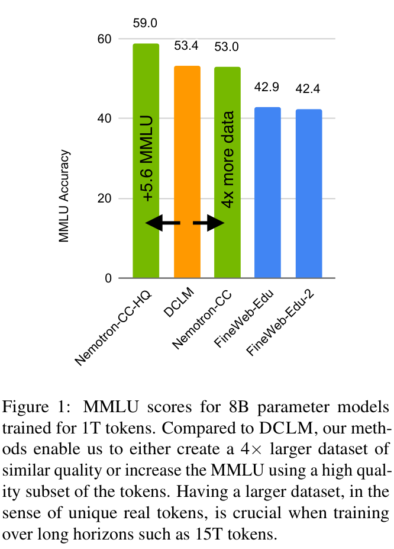
1 引言
互联网抓取数据是训练 LLM 时不重复 token 的最大来源，可视为发挥两项主要作用：提供高质量内容与多样性。近期从 Common Crawl1 衍生的英文数据集，如 FineWeb-Edu (Penedo et al., 2024) 与 DCLM (Li et al., 2024)，侧重于能提高基准准确率的高质量内容，而非数据量。它们在较小规模上取得了重大进展，其基准结果可与部分最好的闭源模型竞争，例如 DCLM 的 7B 模型使用 2.6T token 训练，这主要归功于使用基于模型的过滤器提取高质量教育与指令内容。然而，这以数据量为代价：它们删除了约 90% 的数据。在更长的 token 训练周期中训练更大模型时，这种激进的剪枝可能并非最有效的策略，例如 Llama 3.1 包括 8B–405B 参数模型，使用 15T token 训练 (Dubey et al., 2024)，而 Gemma 2 27B 使用 13T token 训练 (Team et al., 2024)。DCLM 与 FineWeb-Edu 均包含约 80% 的近重复内容，分别有 1T 和 0.2T 不重复 token (Ben Allal, 2024; Li et al., 2024)；用这些数据集训练数万亿 token，意味着在训练中多次看到实质相同的样本。这可能导致模型效果较差，因为 Muennighoff et al.（下页接续）
（接上页）(2024) 发现，与使用更多不重复 token 训练相比，训练四个 epoch 后的收益开始递减。
本文展示如何结合分类器集成、合成数据生成，以及减少对启发式过滤器的依赖，在基准准确率与数据量之间取得更好的权衡。我们的主要贡献如下：
- 提出将英文 Common Crawl 转化为包含 6.3T token 的长训练周期预训练数据集的方法，其中包括 4.4T 经过全局去重的原始 token 与 1.9T 合成生成的 token。我们按照 Common Crawl 使用条款发布数据集2，并在采用 Apache 2.0 许可证的开源 NeMo Curator 库3 中发布参考实现。质量分类器模型也已发布4。
- 通过与领先的开放英文 Common Crawl 数据集 DCLM 与 FineWeb-Edu 比较，证明该方法的有效性（图 1）。
- 数据中的 1.1T token 高质量子集，相比 DCLM 将 MMLU 提高了 5.6，说明我们的方法在相对较短的 token 训练周期中更优。
- 完整数据集表现与 DCLM 相当，但包含的不重复真实 token 是其四倍。
- 更大的规模支持长 token 训练周期下的领先结果：使用我们数据集的加权版本、训练 15T token 的 8B 参数模型，整体准确率高于 Llama 3.1 8B，尤其是 MMLU 达到 70.3，而 Llama 为 65.3。注意，Llama 3.1 8B 同样使用 15T token 训练 (Dubey et al., 2024)。
- 开展消融研究，并发现：
- 集成不同的基于模型的分类器，有助于选择规模更大、更多样的高质量 token 集合。
- 改写能有效减少低质量数据中的噪声和错误，并从高质量数据生成具有新鲜、不重复 token 的多样变体，从而改善下游任务结果。
- 对高质量数据禁用传统的非学习启发式过滤器，可在不损害准确率的情况下进一步增加高质量 token 产出。
最后，我们强调，整体指导原则是从静态、非学习、启发式流水线，转向更多依靠学习、性能会随时间自然改善的飞轮。随着数据改善，我们训练的 LLM 也会改善；这些改善后的 LLM 又会反过来改善数据，因为我们用它们生成更好的合成数据和质量分类。
2 方法
本节解释我们为 LLM 构建最佳英文 Common Crawl 预训练数据集所做的工作。这些工作可分为三部分。首先，第 2.1 节讨论如何更恰当地使用文本提取器和启发式过滤器来增加 token 产出。其次，第 2.2 节介绍基于模型的质量标注流水线方法。最后，第 2.3 节介绍进一步提高数据质量的合成数据生成方法。最终流水线的示意图见附录 A 的图 3。
2.1 HTML 到文本的提取器与过滤器
从 HTML 提取的文本是 LLM 预训练数据集的基础和主要来源，因此，分析和理解提取工具对于优化数据质量与 token 产出具有重大意义。此外，启发式过滤器常使用人工设计的启发规则删除低质量 token (Li et al., 2024; Parmar et al., 2024; Penedo et al., 2024; Dubey et al., 2024)，这也可能使好的 token 面临被删除的风险。我们借助 FineWeb-Edu 分类器 (Penedo et al., 2024) 仔细考察这两个方面；该基于模型的质量分类器已证明能有效识别对提升 LLM 能力至关重要的高质量 token。
2 数据集。3 NeMo-Curator。4 Nemotron 分类器 和 Mixtral 分类器。
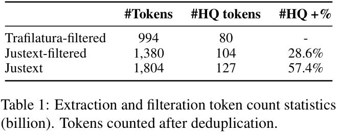
HTML 到文本的提取。我们测试了两个 HTML 到文本提取器：Justext (Pomikálek, 2011) 和 Trafilatura (Barbaresi, 2021)。定性而言，我们认为两个提取器的质量处于同一水平。定量而言，我们计算了两个提取器在 13 个选定 Common Crawl 快照上的 token 产出（见附录 F）。统计结果见表 1。我们发现，按 FineWeb-Edu 分类器的标准（分数为 3、4、5），Justext 能产出更多 token，尤其是更多高质量 token（+28.6%）。我们强调，构建长训练周期预训练数据集时，提高不重复 token 数量极其重要，例如 Llama3.1 的 15T token。虽然 Justext 相比 Justext-filtered 的 HQ token 比例略有下降（7.0% 对 7.5%），但这里我们希望最大化的是 HQ token 的绝对数量（127B 对 104B）。随后我们会把数据划分为质量桶，从而准确控制训练中 HQ 与非 HQ 数据的比例，而无需依赖某一提取工具产生的自然分布。提取后，我们根据 pycld25 和阈值为 0.3 的 FastText lid176 语言分类器6 (Joulin et al., 2016, 2017) 的判断，过滤并仅保留英文文本。之后分别使用 NeMo Curator 库7 和 deduplicate-text-datasets 库8，执行全局模糊去重，以及对八分之一快照分组执行精确子串去重 (Lee et al., 2022)。
过滤。传统上，启发式过滤器被用作后处理步骤，从预训练数据集中删除低质量 token (Li et al., 2024; Parmar et al., 2024; Penedo et al., 2024; Dubey et al., 2024)。我们重新考察 Parmar et al. (2024) 中的过滤流水线。该流水线依次包括 Raffel et al. (2020)、Rae et al. (2021) 提出的一组启发式过滤器，以及基于 KenLM 模型 (Heafield, 2011) 的困惑度过滤器；该模型使用 Wikipedia 和书籍数据训练 (Wenzek et al., 2020)。为更好地定量理解过滤流水线的有效性，我们计算 token 产出并将结果列于表 1。我们发现，过滤流水线从数据集中删除了相当一部分被 FineWeb-Edu 分类器判为高质量的 token（−18.1%）。
考虑到启发式过滤器对高质量 token 产出的影响，我们提出，不对基于模型的质量分类器（下一节介绍）识别的高质量 token 应用这些过滤器，而仅在低质量划分上使用。实验部分通过下游基准实证检验提取器和过滤器对预训练数据质量的影响。详细结果见第 3.3 节。
2.2 基于模型的质量标注
近期研究 (Li et al., 2024; Penedo et al., 2024) 使用基于模型的分类器，从英文 Common Crawl 提取高质量预训练文档。然而，这两个质量分类器对高质量 token 的召回率均有限（约 10%，见表 9），这将成为长训练周期训练 LLM 的瓶颈。此外，质量分类器赋予的质量标签，并不一定与 LLM 的下游任务性能一致。因此，我们提出基于集成的质量标注流水线。具体来说，首先构建三个质量分类器，每个分类器对高质量内容的偏好不同。随后集成这三个分类器，对所有文档评分，并根据质量分数将抓取语料划分到不同质量桶。最后，根据细粒度文档桶对应的下游任务表现，把它们重新组合为五个不同质量等级。
质量分类器训练。准备带有质量标注的预训练文档，是构建质量分类器的第一个关键步骤 (Dubey et al., 2024; Abdin et al., 2024; Yang et al., 2024)。类似于 Penedo et al. (2024) 的工作9，我们构建了两个版本的质量标注数据。我们提示 Mistral 8x22B-instruct10 与（下页接续）
5 pycld2。6 FastText 语言识别。7 NeMo-Curator。8 deduplicate-text-datasets。9 我们使用与 FineWeb-Edu-Annotation 数据集相同的 460K 文档样本。10 Mixtral 8x22B。
（接上页）Nemotron-340B-instruct (Adler et al., 2024)，根据教育价值，以 0 到 5 的尺度给 FineWeb 中的网页文档评分。随后，在 Snowflake-arctic-embed-m embedding 模型 (Merrick et al., 2024) 之上，使用两个不同版本的训练集微调线性回归模型。两个模型均训练 20 个 epoch，学习率为 \(3\times10^{-4}\)，embedding 和编码器层保持冻结；我们选择在留出的验证集上 F1 分数最高的 checkpoint。
我们也使用 Li et al. (2024) 发布的、基于 fastText 的 DCLM 分类器。DCLM 分类器使用指令格式数据 (Teknium, 2023) 和 ELI5 subreddit 中高分帖子数据 (Fan et al., 2019) 的组合进行训练；与 FineWeb-Edu 分类器 (Penedo et al., 2024) 相比，它在识别高质量预训练 token 方面表现更强。DCLM 分类器为高质量预训练文档标注提供新的视角，并帮助提高高质量 token 的召回率。
质量评分与分桶。首先，分别使用三个分类器预测所有文档的质量分数。随后，根据每个分类器的质量分数排名，将模型输出分数取整映射到 0 至 19，使每个分数桶约含 5% 的文档，19 号桶包含质量最高的前 5% 文档。之后对三个分类器的整数分数取最大值，集成为每个文档的最终质量分数。集成操作会使各桶的文档数量分布变得不均衡。
质量标注。为了赋予更符合实际下游任务表现的质量标签，我们进一步将三个分类器预测的细粒度质量分数组合成五类下游质量类别。我们使用退火训练评估每个数据桶的下游任务质量。具体来说，对一个训练已完成 70% 的 8B 模型，以 50B token 继续预训练来测量各桶质量。默认数据混合赋予 66% 权重，正在评估的数据集赋予 34% 权重。通过比较每个桶在九项任务上的平均表现，将 20 个桶归为五个大类，最终分布见表 2。更多细节见附录 C。
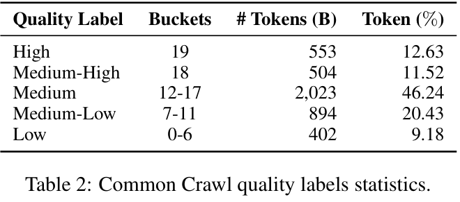
2.3 合成数据生成
查看各质量等级的样本后，我们发现，得分较低的文档往往包含更多噪声和错误，而得分较高的文档通常具有良好的写作与格式。因此，对低质量和高质量文档生成数据时，我们采用不同策略。
对于低质量数据，目标是在保留有用信息的同时减少噪声与错误来提高质量，从而减少训练计算开销。Maini et al. (2024) 表明，使用中等规模语言模型改写网页数据，可以得到改善后的平行合成语料，从而降低模型困惑度并提高下游任务准确率。与生成教科书、短篇故事等新内容的方法 (Wang et al., 2023; Eldan and Li, 2023; Gunasekar et al., 2023) 不同，我们基于改写的方法并不把语言模型当作知识库，而是专注于把给定文本转换为另一种风格，因此可以使用更轻量的模型。我们采用 Maini et al. (2024) 的 Wikipedia 风格提示来重写低质量文档（附录 H 的提示 5），这能有效减少错误与冗余，并改善格式。
对于高质量数据，目标是获得更多不重复 token，并凝练关键知识。根据 Muennighoff et al. (2024)，增加重复 token 的收益递减，尤其在四个 epoch 之后。对于高质量文档，我们另外使用四种提示生成合成数据：（1）多样化问答（QA）对：以不同形式，如是非题、开放式问题、选择题，询问文本中的事实信息并提供正确答案；（2）蒸馏：将文本改写为简洁、清晰的段落；（3）提取知识：重写文本中的知识，忽略无信息内容；（4）知识列表：将文本中的关键信息提取为有组织的列表。
我们要求模型提供清晰、简洁的回答，同时保留事实信息和数字等具体细节。完整提示见附录 H。
随着输入文本长度增加，模型倾向于产生过于简化、细节减少的输出。因此，我们将每个文档切分为多个片段，每段包含一行或多行完整文本，且短于指定 token 上限11。超出 token 上限的过长行会被丢弃。
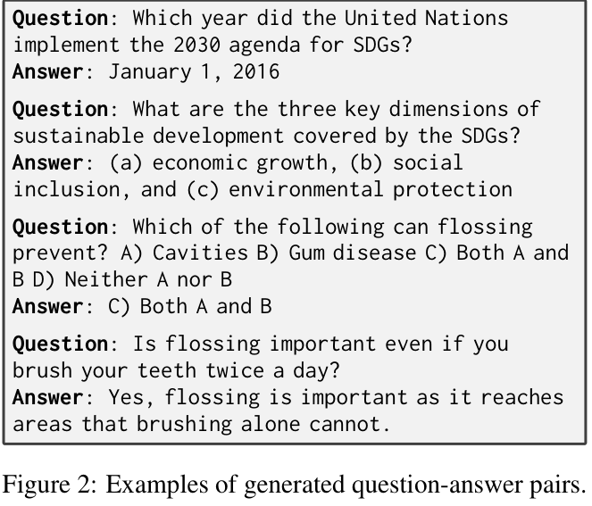
后处理步骤包括：删除不完整结果，去除特定 Markdown 格式（如双星号），剥离符合特定模式的前缀，如“Here is a paraphrased version:”与“Paraphrased Text:”，删除包围整个回答的引号，并过滤过短输出，即少于 50 个 token 的输出。对于 Wikipedia 结果，我们拼接来自同一原始文档各片段的生成段落。对于多样化 QA 对结果，我们打乱生成的问题和答案对，根据片段长度保留最多指定数量的问答对，并将其追加到片段末尾。
使用 Mistral NeMo 12B12 的 instruct 版本，以 FP8 推理、top-p 为 0.9、采样温度为 0.5，我们合成了超过 1.8T token，如表 3 所示，包括来自低质量文档的 336.3B token 与来自高质量文档的 1.5T token。由于时间和资源限制，我们未对中等质量文档进行合成数据生成。我们使用 TensorRT-LLM13 和 NeMo-Skills14 实现大规模数据合成。
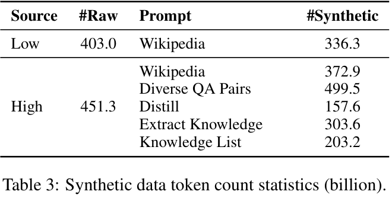
2.4 整合全部方法
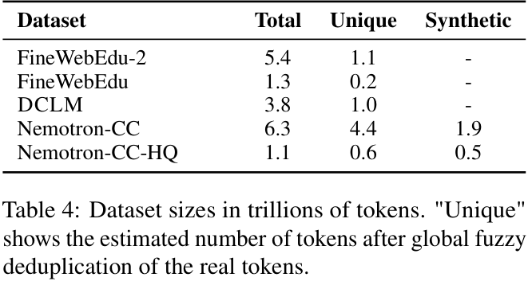
将上述技术应用于 Common Crawl 从 CC-MAIN-2013-20 到 CC-MAIN-2024-30 的 99 个快照，我们创建了包含 6.3T token 的数据集 Nemotron-CC，其中包括 4.4T 全局去重 token 和 1.9T 合成衍生 token。其不重复 token 大约是 FineWebEdu-2 与 DCLM 的四倍，因为这两个数据集只执行了分片形式的近似去重，包含约 80% 模糊重复内容 (Ben Allal, 2024; Li et al., 2024)。为在相对较短的 token 训练周期中实现更公平的比较，我们也考察了数据中的 1.1T token 高质量子集 Nemotron-CC-HQ，它仅包含得分最高的真实数据与多样化 QA 对合成数据。各数据集规模明细见表 4。
3 实验
3.1 实验设置
训练设置。我们使用开源 Megatron-LM 库15 (Shoeybi et al., 2019)，训练标准的 8B 参数 transformer LLM。
11 token 上限设为：Wikipedia 512，蒸馏 2,000，提取知识 1,400，多样化 QA 对和知识列表 1,000；其中包括提示与聊天格式所占的 token。12 Mistral NeMo。13 TensorRT-LLM。14 NeMo-Skills。15 Megatron-LM。
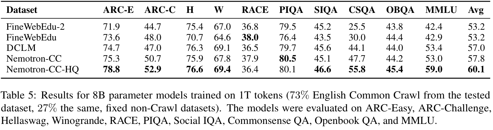
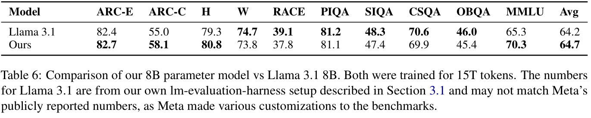
超参数细节见附录 D。
数据混合。除非另有说明，我们使用 73% 英文 Common Crawl 数据与 27% 固定的专门代码、论文、书籍、专利及 Wikipedia 数据混合 (Adler et al., 2024)，训练 1T token。比较数据集时，仅改变 73% 的英文 Common Crawl 部分。见附录 D 的表 12。
评估设置。我们使用开源 LM Evaluation Harness 库16 (Gao et al., 2023)，评估以下十项常识与推理任务，括号内为报告指标：ARC-Easy 与 ARC-Challenge（归一化准确率）(Clark et al., 2018)，Hellaswag（归一化准确率）(Zellers et al., 2019)，Winogrande（准确率）(Sakaguchi et al., 2021)，RACE（准确率）(Lai et al., 2017)，PIQA（归一化准确率）(Bisk et al., 2020)，Social IQA（准确率）(Sap et al., 2019)，Commonsense QA（准确率）(Talmor et al., 2019)，Openbook QA（归一化准确率）(Mihaylov et al., 2018)，以及 MMLU（准确率）(Hendrycks et al., 2021)。
3.2 主要结果
短 token 训练周期（1T）。为验证数据集质量，首先在相对较短的 1T token 训练周期中训练标准 8B 参数 transformer LLM。结果见表 5。高质量数据集 Nemotron-CC-HQ 在除 RACE 外的所有任务上，准确率均高于 DCLM 和 FineWeb-Edu。尤其是，相比 DCLM，MMLU 提高 5.6，平均分提高 3.1。这证明，即使在数据不受限的设置中，分类器集成与合成数据仍然有效。完整的 6.3T token 数据集 Nemotron-CC 的 MMLU 与平均准确率大致与 DCLM 相当。但由于其不重复真实 token 数量是四倍，我们预计它在 15T token 训练等数据受限的设置下更优。
长 token 训练周期（15T）。我们用 15T token 训练一个 8B 模型，其中 7.2T token 来自我们的数据集。表 6 显示，模型平均准确率高于同样使用 15T token 训练的 Llama 3.1 8B，其中 MMLU 达到 70.3，而 Llama 为 65.3。这说明，数据集确实适合长 token 训练周期中的领先训练。该实验更多细节见附录 E。
3.3 消融研究
为进一步研究我们方法各模块的贡献与效果，我们开展了全面的消融研究。
提取器与过滤器比较。如第 2.1 节所述，通过使用 Justext 替代 Trafilatura，并从后处理步骤中移除过滤器，可显著增加 57.4% 的高质量 token。我们也进行消融研究，通过（下页接续）
（接上页）下游基准，更好地理解提取器选择与移除过滤器的影响。我们进行了四个 8B-1T 实验。基准分数见表 7。除了使用 Justext 替代 Trafilatura、不采用启发式过滤器所带来的 token 产出收益之外，两者结合对下游任务准确率没有明显影响，差异仅很小（比较 Trafilatura filtered 与 Justext unfiltered）。此外，仅对高质量 token 移除过滤器时，结果进一步改善（比较 Justext unfiltered 与 Justext HQ unfiltered），尤其是 MMLU 提高 +2%。注意，移除过滤器的动机是提高 token 产出，特别是由于高质量 token 显著稀缺，更要提高其产出。综合实验结果与总体 token 产出的增加，我们选择仅对高质量 token 移除过滤器。
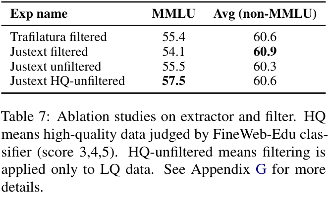
分类器比较。集成不同分类器来标注文档质量，是构建数据集的关键步骤之一，因此我们对此组件进行了全面分析与比较。
我们详细比较了方法中使用的两类分类器：按教育程度评估文档质量的 FineWeb-Edu 分类器，以及重视文档信息量的 DCLM 分类器。我们在随机选取的 Common Crawl 快照 CC-MAIN-2021-21 上，比较两种分类器预测的高质量文档。表 8 显示文档统计比较。仅 10% 的文档同时被两种分类器预测为高质量；35.4% 的文档只被 FineWeb-Edu 判为高质量，54.4% 只被 DCLM 判为高质量。因此，集成不同分类器可以提高 Common Crawl 高质量文档的召回率17。
我们进一步根据下游任务表现，将每个分类器与集成方法18 比较。在随机选择的 13 个 Common Crawl 快照（见附录 F）中，使用不同分类器标注的高质量文档，以 1T token 预训练 8B 参数 LLM。表 9 给出不同评估任务上的详细比较。集成方法大幅将高质量 token 比例从 9% 提高到 25%，同时所有任务平均的一般语言理解性能仍为最高。按高质量 token 比例衡量，集成方法也优于 FineWeb-Edu 与 DCLM 分类器，并在九项评估任务上与它们相当或略优。这非常重要，因为更多不重复高质量 token，是在更长 token 训练周期中预训练更大 LLM 的关键。
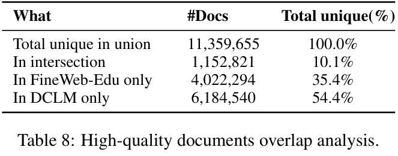
合成数据评估。如表 10 所示，该消融研究旨在回答两个问题：（1）改写低质量数据是否提高下游任务准确率？（2）合成数据能否帮助抵消 Muennighoff et al. (2024) 所报告的重复数据价值下降？为回答这些问题，我们用相同超参数、不同的 1T token 混合训练四个 8B 模型：（1）LQ-Base：包含低质量文档的原始 Common Crawl 数据；（2）LQ-Synthetic：LQ-Base 的增强版本，其中低质量文档经过改写；（3）HQ-Base：高质量文档重复八次、低质量与中等质量文档较少的混合；（4）HQ-Synthetic：HQ-Base 的变体，将高质量文档的四次重复替换为合成数据集。
比较 LQ-Base 与 LQ-Synthetic 的结果可见，对低（下页接续）
17 详细 URL 域名比较见附录 B。18 注意，由于许可证问题，我们未在集成中使用 FineWeb-Edu 分类器，因为它使用 Llama3 生成的标注训练。
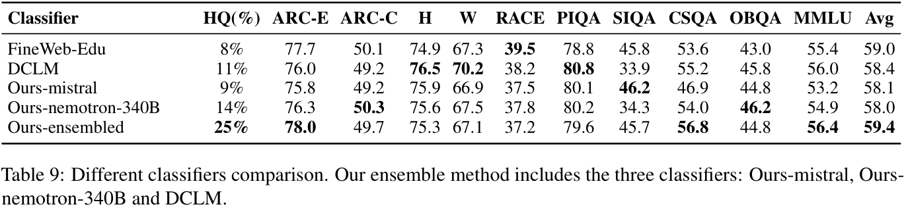
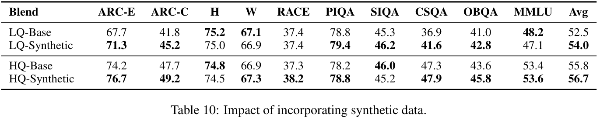
（接上页）质量数据改写使平均分绝对提高 1.50。在 ARC-Easy、ARC-Challenge、OpenbookQA 和 CommonsenseQA 上，也观察到 1.80% 到 4.75% 的明显提升；但部分任务准确率略降，可能意味着数据合成引入了错误信息。当前实践通常使用数据整理方法发现并消除噪声样本。由于时间和资源限制，对该问题的详细探索留待未来工作。
HQ-Base 与 HQ-Synthetic 的比较显示，将高质量数据八个 epoch 中的四个替换为合成数据集混合，能提高大多数基准的准确率。该改善可能来自两个因素：加入新的不重复 token，以及加入不同风格，让模型更有效地学习特定能力（如问答）或吸收知识。
4 相关工作
Phi 系列模型率先使用少量极高质量数据训练，包括整理后的网页与合成数据 (Gunasekar et al., 2023; Li et al., 2023; Abdin et al., 2024)。但它们关注较短的 token 训练周期，披露细节有限。FineWeb-Edu 与 DCLM 是本文主要比较对象 (Li et al., 2024; Penedo et al., 2024)。我们建立在其基于模型过滤的核心思想之上，但展示如何结合其他技术改善过滤与数据量。其他英文 Common Crawl 数据集，如 C4、DOLMA、Gopher、RefinedWeb、TxT360，主要关注提取与非学习启发规则 (Penedo et al., 2023; Soldaini et al., 2024; Rae et al., 2021; Raffel et al., 2020; Tang et al., 2024)。如同 FineWeb-Edu 与 DCLM，我们起点的核心流水线也包含许多此类思想，但本文描述如何修改并超越这些非学习技术，实现领先的准确率与多样性。同期工作 Zyda-2 展示如何过滤、交叉去重并组合 FineWeb-Edu、DCLM、Zyda-1 与 Dolma-CC 数据集，得到准确率更高、规模更大的整体 (Tokpanov et al., 2024)。相比之下，我们关注新英文 Common Crawl 数据集的创建技术，而不是已有数据集的组合或修改。最后，许多研究致力于创建多语言数据集 (Xue et al., 2021; Brack et al., 2024; Abadji et al., 2022; Wenzek et al., 2020; Kudugunta et al., 2023)。将我们的思想扩展到英文以外的语言，留待未来。
合成数据集广泛用于语言模型预训练与后训练。Cheng et al. (2024) 为预训练合成指令与回答对。Eldan and Li (2023) 展示，在短篇故事合成数据集上训练的更小或更简单模型，能够生成流畅、一致的故事。同样，使用高质量合成教科书与练习数据集训练的小模型，也能在编程基准上获得令人瞩目的高准确率 (Gunasekar et al., 2023; Li et al., 2023)。这些方法通常需要强大语言模型来合成新内容，例如 Eldan and Li (2023) 中的 GPT-3.5 与 GPT-4。相反，Maini et al. (2024) 表明，（下页接续）
（接上页）Qwen-1.8B 与。 Mistral-7B 等紧凑模型，已足以改写网页数据。该方法生成多样化、高质量合成数据，能有效降低模型困惑度并提高多个基准的表现。我们采用这一核心思想，但探索更多提示，并展示如何针对低质量与高质量数据做专门设计。
5 结论
在从英文。 Common Crawl 数据为 LLM 生产长训练周期预训练 token 时，我们展示了如何改进现有领先方法，并在基准准确率与数据量之间取得更好的权衡；这里数据量按不重复真实 token 数量衡量。具体而言，我们展示了集成基于模型的质量过滤器、改写低质量和高质量文档、减少对非学习启发规则的依赖这些方法的有效性。数据集公开发布，并按质量等级与类型划分，包括真实数据与不同类型合成数据，使社区能够进一步实验质量与多样性的权衡，以及如何构建有效的短训练周期和长训练周期课程。
6 局限性
本研究的一些关键局限如下。对于基于模型的过滤器集成与质量分桶，我们的时间和资源只允许尝试一种策略。虽然有效，但未来仍可能改进，尤其是提高在更高质量区间的辨识敏感性。对于改写数据，我们未验证事实准确性或与原始内容的忠实程度。需要更多工作来理解这一设置下幻觉或内容多样性丧失的风险，以及如何减轻这些风险。我们也仅考察了低质量与高质量数据改写。探索如何最好地改写中等质量数据也可能很有价值。我们未对流水线的所有部分进行消融。例如，语言识别可能仍有改进空间。总体而言，我们仅在英文文本上尝试这些方法，适配其他语言需要更多工作。
最后，我们未对数据集进行去污染，因为如何最好地做这件事尚未形成强烈共识，而且其影响仍不确定、存在争论，尤其对于使用大量 token 长周期训练的大模型。我们指出，比较对象数据集。 FineWeb-Edu 与。 DCLM 发布时均未去污染，比较的模型。 Meta Llama 3.1 也使用了受污染数据训练。DCLM 报告了一些污染分析，但结果表明污染不是关键因素：例如，去污染后。 MMLU 实际提高；DCLM 在。 MMLU 上优于。 FineWeb，尽管。 FineWeb 的。 MMLU 污染更多（见。 Li et al. (2024) 第 4.6 节与附录。 N）。尽管如此，更好地理解污染对不同模型规模和不同 token 训练周期的影响仍很有价值，我们希望社区在这一公开数据集上探索此类问题。
致谢
感谢。 Common Crawl Foundation 托管数据集。感谢。 Pedro Ortiz Suarez 提供改善论文的宝贵反馈，感谢。 Greg Lindahl 帮助改善数据格式与布局。此外，感谢。 Ayush Dattagupta、Randy Gelhausen、Smita Ithape、Vibhu Jawa、Nirmal Kumar Juluru、Vineeth Kalluru、Mehran Maghoumi、Arham Mehta、Ranjit Rajan、Janaki Vamaraju、Ryan Wolf 与。 Sarah Yurick 对。 NeMo Curator 的帮助，以及将。 Nemotron-CC 配方和分类器作为。 NeMo Curator 的一部分开源。
参考文献
Julien Abadji, Pedro Ortiz Suarez, Laurent Romary, and Benoît Sagot. 2022. 迈向更清洁的面向文档的多语言抓取语料 载于 Proceedings of the Thirteenth Language Resources and Evaluation Conference, 页码：4344–4355, Marseille, France. European Language Resources Association. 原文链接
Marah Abdin, Sam Ade Jacobs, Ammar Ahmad Awan, Jyoti Aneja, Ahmed Awadallah, Hany Awadalla, Nguyen Bach, Amit Bahree, Arash Bakhtiari, Harkirat Behl, et al. 2024. Phi-3 技术报告：在手机本地运行的高能力语言模型 arXiv 预印本 arXiv:2404.14219.
Bo Adler, Niket Agarwal, Ashwath Aithal, Dong H Anh, Pallab Bhattacharya, Annika Brundyn, Jared Casper, Bryan Catanzaro, Sharon Clay, Jonathan Cohen, et al. 2024. Nemotron-4 340B 技术报告 arXiv 预印本 arXiv:2406.11704.
Joshua Ainslie, James Lee-Thorp, Michiel de Jong, Yury Zemlyanskiy, Federico Lebron, and Sumit Sanghai. 2023. GQA：从多头 checkpoint 训练广义多查询 transformer 模型 载于 Proceedings of the 2023 Conference on Empirical Meth
参考文献（接续）
ods in Natural Language Processing, 页码：4895– 4901.
Adrien Barbaresi. 2021. Trafilatura：用于文本发现与提取的网页抓取库及命令行工具 载于 Proceedings of the Joint Conference of the 59th Annual Meeting of the Association for Computational Linguistics and the 11th International Joint Conference on Natural Language Processing: System Demonstrations, 页码：122–131. Association for Computational Linguistics. 原文链接
Loubna Ben Allal. 2024. 大部分数据都是重复的？ https://huggingface.co/datasets/HuggingFaceFW/fineweb-edu/discussions/7. 访问日期：2024-10-24。 原文链接
Yonatan Bisk, Rowan Zellers, Jianfeng Gao, Yejin Choi, et al. 2020. PIQA：使用自然语言进行物理常识推理 载于 Proceedings of the AAAI conference on artificial intelligence, 卷：34, 页码：7432–7439.
Manuel Brack, Malte Ostendorff, Pedro Ortiz Suarez, José Javier Saiz, Iñaki Lacunza Castilla, Jorge Palomar-Giner, Alexander Shvets, Patrick Schramowski, Georg Rehm, Marta Villegas, and Kristian Kersting. 2024. Community OSCAR：多语言网页数据的社区协作 载于 Proceedings of the Fourth Workshop on Multilingual Representation Learning (MRL 2024), 页码：232–235, Miami, Florida, USA. Association for Computational Linguistics. 原文链接
Daixuan Cheng, Yuxian Gu, Shaohan Huang, Junyu Bi, Minlie Huang, and Furu Wei. 2024. 指令预训练：语言模型是有监督的多任务学习器 载于 Proceedings of the 2024 Conference on Empirical Methods in Natural Language Processing, 页码：2529–2550, Miami, Florida, USA. Association for Computational Linguistics. 原文链接
Peter Clark, Isaac Cowhey, Oren Etzioni, Tushar Khot, Ashish Sabharwal, Carissa Schoenick, and Oyvind Tafjord. 2018. 认为你已解决问答问题？试试。 ARC——AI2 推理挑战 arXiv 预印本 arXiv:1803.05457.
Abhimanyu Dubey, Abhinav Jauhri, Abhinav Pandey, Abhishek Kadian, Ahmad Al-Dahle, Aiesha Letman, Akhil Mathur, Alan Schelten, Amy Yang, Angela Fan, et al. 2024. Llama 3 模型家族 arXiv 预印本 arXiv:2407.21783.
Ronen Eldan and Yuanzhi Li. 2023. TinyStories：语言模型可以小到什么程度，仍能说出连贯的英语？ arXiv 预印本 arXiv:2305.07759.
Angela Fan, Yacine Jernite, Ethan Perez, David Grangier, Jason Weston, and Michael Auli. 2019. ELI5：长篇问答 载于 Proceedings of the 57th Annual Meeting of the Association for Computational Linguistics, 页码：3558–3567.
Steven Feng, Shrimai Prabhumoye, Kezhi Kong, Dan Su, Mostofa Patwary, Mohammad Shoeybi, and
Bryan Catanzaro. 2024. 最大化数据潜力：通过两阶段预训练提高 LLM 准确率 预印本， arXiv:2412.15285. 原文链接
Leo Gao, Jonathan Tow, Baber Abbasi, Stella Biderman, Sid Black, Anthony DiPofi, Charles Foster, Laurence Golding, Jeffrey Hsu, Alain Le Noac’h, Haonan Li, Kyle McDonell, Niklas Muennighoff, Chris Ociepa, Jason Phang, Laria Reynolds, Hailey Schoelkopf, Aviya Skowron, Lintang Sutawika, Eric Tang, Anish Thite, Ben Wang, Kevin Wang, and Andy Zou. 2023. 用于少样本语言模型评估的框架 原文链接
Suriya Gunasekar, Yi Zhang, Jyoti Aneja, Caio César Teodoro Mendes, Allie Del Giorno, Sivakanth Gopi, Mojan Javaheripi, Piero Kauffmann, Gustavo de Rosa, Olli Saarikivi, et al. 2023. 教科书就是你所需要的全部 arXiv 预印本 arXiv:2306.11644.
Kenneth Heafield. 2011. KenLM：更快、更小的语言模型查询 载于 Proceedings of the sixth workshop on statistical machine translation, 页码：187–197.
Dan Hendrycks, Collin Burns, Steven Basart, Andy Zou, Mantas Mazeika, Dawn Song, and Jacob Steinhardt. 2021. 衡量大规模多任务语言理解 载于 International Conference on Learning Representations. 原文链接
Armand Joulin, Edouard Grave, Piotr Bojanowski, Matthijs Douze, Hérve Jégou, and Tomas Mikolov. 2016. Fasttext.zip：压缩文本分类模型 arXiv 预印本 arXiv:1612.03651.
Armand Joulin, Edouard Grave, Piotr Bojanowski, and Tomas Mikolov. 2017. 高效文本分类的技巧集合 载于 Proceedings of the 15th Conference of the European Chapter of the Association for Computational Linguistics: Volume 2, Short Papers, 页码：427–431, Valencia, Spain. Association for Computational Linguistics. 原文链接
Sneha Kudugunta, Isaac Caswell, Biao Zhang, Xavier Garcia, Derrick Xin, Aditya Kusupati, Romi Stella, Ankur Bapna, and Orhan Firat. 2023. MADLAD-400：经过审查的大规模多语言文档级数据集。 Advances in Neural Information Processing Systems, 36:67284–67296.
Guokun Lai, Qizhe Xie, Hanxiao Liu, Yiming Yang, and Eduard Hovy. 2017. RACE：来自考试的大规模阅读理解数据集 载于 Proceedings of the 2017 Conference on Empirical Methods in Natural Language Processing, 页码：785– 794.
Katherine Lee, Daphne Ippolito, Andrew Nystrom, Chiyuan Zhang, Douglas Eck, Chris Callison-Burch, and Nicholas Carlini. 2022. 训练数据去重使语言模型更好 载于 Proceedings of the 60th Annual Meeting of the Association for Computational Linguistics (Volume 1: Long Papers), 页码：8424–8445.
参考文献（接续）
Jeffrey Li, Alex Fang, Georgios Smyrnis, Maor Ivgi, Matt Jordan, Samir Gadre, Hritik Bansal, Etash Guha, Sedrick Keh, Kushal Arora, et al. 2024. DataComp-LM：寻找下一代语言模型训练集 载于 The Thirty-eight Conference on Neural Information Processing Systems Datasets and Benchmarks Track. 原文链接
Yuanzhi Li, Sébastien Bubeck, Ronen Eldan, Allie Del Giorno, Suriya Gunasekar, and Yin Tat Lee. 2023. 教科书就是你所需要的全部。 II：phi-1.5 技术报告 arXiv 预印本 arXiv:2309.05463.
Pratyush Maini, Skyler Seto, He Bai, David Grangier, Yizhe Zhang, and Navdeep Jaitly. 2024. 改写网络：兼顾计算与数据效率的语言建模方案 载于 ICLR 2024 Workshop on Navigating and Addressing Data Problems for Foundation Models.
Luke Merrick, Danmei Xu, Gaurav Nuti, and Daniel Campos. 2024. Arctic-embed：可扩展、高效且准确的文本 embedding 模型 arXiv 预印本 arXiv:2405.05374.
Todor Mihaylov, Peter Clark, Tushar Khot, and Ashish Sabharwal. 2018. 一套盔甲能导电吗？用于开卷问答的新数据集 载于 Proceedings of the 2018 Conference on Empirical Methods in Natural Language Processing, 页码：2381–2391.
Niklas Muennighoff, Alexander Rush, Boaz Barak, Teven Le Scao, Nouamane Tazi, Aleksandra Piktus, Sampo Pyysalo, Thomas Wolf, and Colin A Raffel. 2024. 扩展数据受限的语言模型。 Advances in Neural Information Processing Systems, 36.
Jupinder Parmar, Shrimai Prabhumoye, Joseph Jennings, Bo Liu, Aastha Jhunjhunwala, Zhilin Wang, Mostofa Patwary, Mohammad Shoeybi, and Bryan Catanzaro. 2024. 数据无处不在：预训练数据集构建指南 载于 Proceedings of the 2024 Conference on Empirical Methods in Natural Language Processing, 页码：10671–10695.
Guilherme Penedo, Hynek Kydlíček, Loubna Ben allal, Anton Lozhkov, Margaret Mitchell, Colin Raffel, Leandro Von Werra, and Thomas Wolf. 2024. FineWeb 数据集：从网络中大规模提炼最优质文本数据 载于 The Thirty-eight Conference on Neural Information Processing Systems Datasets and Benchmarks Track. 原文链接
Guilherme Penedo, Quentin Malartic, Daniel Hesslow, Ruxandra Cojocaru, Hamza Alobeidli, Alessandro Cappelli, Baptiste Pannier, Ebtesam Almazrouei, and Julien Launay. 2023. Falcon LLM 的。 RefinedWeb 数据集：仅用网页数据超越人工整理语料。 Advances in Neural Information Processing Systems, 36:79155–79172.
Jan Pomikálek. 2011. 从网页语料中删除样板内容与重复内容。 Disertacnı práce, Masarykova univerzita, Fakulta informatiky.
Jack W Rae, Sebastian Borgeaud, Trevor Cai, Katie Millican, Jordan Hoffmann, Francis Song, John Aslanides, Sarah Henderson, Roman Ring, Susannah Young, et al. 2021. 扩展语言模型：训练。 Gopher 的方法、分析与洞见 arXiv 预印本 arXiv:2112.11446.
Colin Raffel, Noam Shazeer, Adam Roberts, Katherine Lee, Sharan Narang, Michael Matena, Yanqi Zhou, Wei Li, and Peter J Liu. 2020. 用统一的文本到文本 transformer 探索迁移学习的极限。 Journal of machine learning research, 21(140):1–67.
Keisuke Sakaguchi, Ronan Le Bras, Chandra Bhagavatula, and Yejin Choi. 2021. WinoGrande：大规模对抗式。 Winograd Schema 挑战。 Communications of the ACM, 64(9):99–106.
Maarten Sap, Hannah Rashkin, Derek Chen, Ronan Le Bras, and Yejin Choi. 2019. Social IQA：关于社会互动的常识推理 载于 Proceedings of the 2019 Conference on Empirical Methods in Natural Language Processing and the 9th International Joint Conference on Natural Language Processing (EMNLP-IJCNLP), 页码：4463–4473.
Noam Shazeer. 2020. GLU 变体改善 transformer arXiv 预印本 arXiv:2002.05202.
Mohammad Shoeybi, Mostofa Patwary, Raul Puri, Patrick LeGresley, Jared Casper, and Bryan Catanzaro. 2019. Megatron-LM：使用模型并行训练数十亿参数语言模型 arXiv 预印本 arXiv:1909.08053.
Luca Soldaini, Rodney Kinney, Akshita Bhagia, Dustin Schwenk, David Atkinson, Russell Authur, Ben Bogin, Khyathi Chandu, Jennifer Dumas, Yanai Elazar, et al. 2024. Dolma：用于语言模型预训练研究的三万亿 token 开放语料 载于 Proceedings of the 62nd Annual Meeting of the Association for Computational Linguistics (Volume 1: Long Papers), 页码：15725–15788.
Alon Talmor, Jonathan Herzig, Nicholas Lourie, and Jonathan Berant. 2019. CommonsenseQA：面向常识知识的问答挑战 载于 Proceedings of the 2019 Conference of the North American Chapter of the Association for Computational Linguistics: Human Language Technologies, Volume 1 (Long and Short Papers), 页码：4149–4158.
Liping Tang, Nikhil Ranjan, Omkar Pangarkar, Xuezhi Liang, Zhen Wang, Li An, Bhaskar Rao, Linghao Jin, Huijuan Wang, Zhoujun Cheng, Suqi Sun, Cun Mu, Victor Miller, Xuezhe Ma, Yue Peng, Zhengzhong Liu, and Eric P. Xing. 2024. TxT360：顶级 LLM 预训练数据集需要完美的数据混合 https://huggingface.co/spaces/LLM360/TxT360. 访问日期：2024-10-24。 原文链接
Gemma Team, Morgane Riviere, Shreya Pathak, Pier Giuseppe Sessa, Cassidy Hardin, Surya Bhupatiraju, Léonard Hussenot, Thomas Mesnard, Bobak
参考文献（接续）
Shahriari, Alexandre Ramé, et al. 2024. Gemma 2：在实用规模上改善开放语言模型 arXiv 预印本 arXiv:2408.00118.
Teknium. 2023. OpenHermes 2.5：用于通用 LLM 助手的开放合成数据集 https://huggingface.co/datasets/teknium/OpenHermes-2.5. 访问日期：2024-10-24。 原文链接
Yury Tokpanov, Paolo Glorioso, Quentin Anthony, and Beren Millidge. 2024. Zyda-2：五万亿 token 高质量数据集 预印本， arXiv:2411.06068. 原文链接
Yizhong Wang, Yeganeh Kordi, Swaroop Mishra, Alisa Liu, Noah A Smith, Daniel Khashabi, and Hannaneh Hajishirzi. 2023. Self-Instruct：通过自生成指令对齐语言模型 载于 Proceedings of the 61st Annual Meeting of the Association for Computational Linguistics (Volume 1: Long Papers), 页码：13484–13508.
Guillaume Wenzek, Marie-Anne Lachaux, Alexis Conneau, Vishrav Chaudhary, Francisco Guzmán, Armand Joulin, and Edouard Grave. 2020. CCNet：从网页抓取数据中提取高质量单语言数据集 载于 Proceedings of the Twelfth Language Resources and Evaluation Conference, 页码：4003–4012, Marseille, France. European Language Resources Association. 原文链接
Linting Xue, Noah Constant, Adam Roberts, Mihir Kale, Rami Al-Rfou, Aditya Siddhant, Aditya Barua, and Colin Raffel. 2021. mT5：大规模多语言预训练文本到文本 transformer 载于 Proceedings of the 2021 Conference of the North American Chapter of the Association for Computational Linguistics: Human Language Technologies, 页码：483–498, Online. Association for Computational Linguistics. 原文链接
An Yang, Baosong Yang, Binyuan Hui, Bo Zheng, Bowen Yu, Chang Zhou, Chengpeng Li, Chengyuan Li, Dayiheng Liu, Fei Huang, et al. 2024. Qwen2 技术报告 arXiv 预印本 arXiv:2407.10671.
Rowan Zellers, Ari Holtzman, Yonatan Bisk, Ali Farhadi, and Yejin Choi. 2019. HellaSwag：机器真的能接完你的句子吗？ 载于 Proceedings of the 57th Annual Meeting of the Association for Computational Linguistics, 页码：4791–4800.
A 流水线概览
流水线概览见图 3。
B FineWeb-Edu 与。 DCLM 分类器比较
不同分类器对高质量文档有不同标准。因此，集成多个分类器有助于提高高质量文档召回率。我们详细比较了方法中使用的两个分类器：FineWeb-Edu 按教育程度为文档质量评分，DCLM 则重视文档的信息量。
我们在一个。 Common Crawl 快照（日期为 2021-21）上，比较两个分类器预测的高质量文档。表 8 显示文档统计比较。表 11 进一步给出两种分类器预测结果中详细的。 URL 域名比较。可见，每个分类器都有自己的高质量域名偏好。在前 1k 个域名中，只有 368 个属于交集。因此，集成不同分类器有助于从。 Common Crawl 检索更多高质量文档。
C 桶比较
为了更好地理解 20 个数据桶中每个桶的数据质量，我们进行消融研究，测试其基准准确率。每项研究中，取一个 900B token checkpoint，继续预训练 50B token。50B token 中的 34% 使用被测试桶的数据，另 66% 固定为与 900B 预训练过程相同的数据分布，以确保分布不发生过大偏移。结果见图 4。平均准确率是在 13 项下游任务上计算。注意，19 号桶远优于所有其他桶，12–18 号桶之间的差异很小。我们设计表 2 的质量标签时，以这里的结果为参考。
D 训练细节：消融
如第 3.1 节所述，我们使用开源。 Megatron-LM 库19 (Shoeybi et al., 2019)，以 1T token 训练 8B 参数 transformer LLM。关键超参数（第 14 页接续）
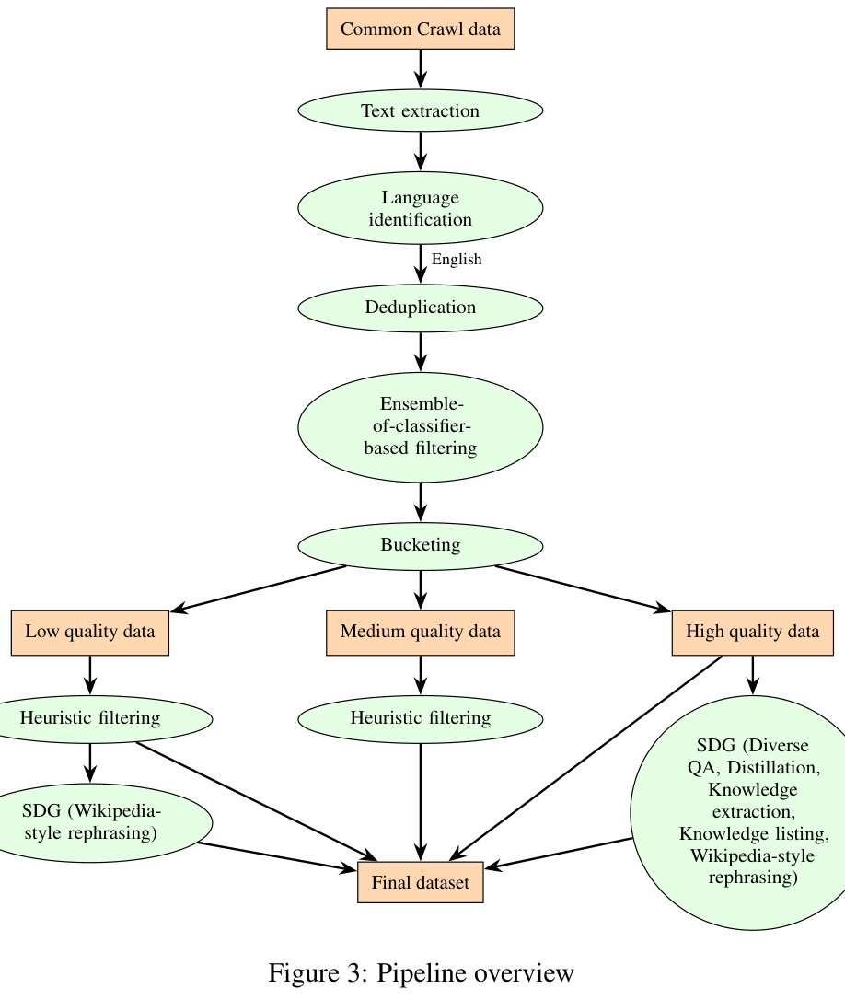
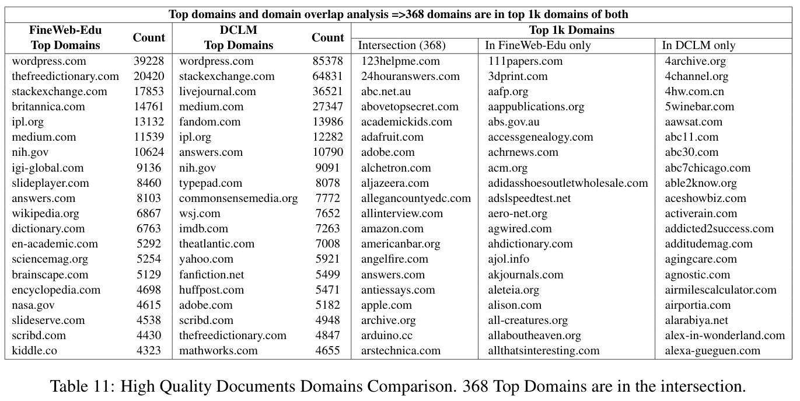
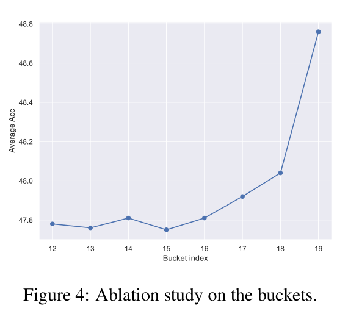
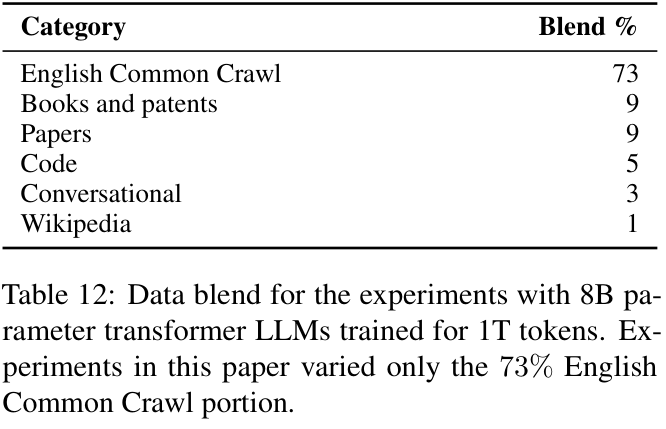
（接第 12 页）如下：使用 32 个 transformer 层，隐藏维度 4096，32 个 attention 头，以及 SwiGLU 激活 (Shazeer, 2020)。对于 attention，使用具有八个查询组的 grouped query attention (Ainslie et al., 2023)。使用 Adam 优化器，\(\beta_1=0.9\)、\(\beta_2=0.95\)、\(\epsilon=10^{-8}\)，权重衰减 0.1，以及余弦学习率调度，峰值学习率 \(3\times10^{-4}\)，最低学习率 \(3\times10^{-6}\)。使用 1024 块 NVIDIA H100 GPU，一次训练约需 40 小时。
这些实验的数据混合明细见表 12。本文实验仅改变 73% 的英文 Common Crawl 部分。
E 长训练周期课程细节
在 15T token 训练中，采用两阶段课程，Feng et al. (2024) 有更详细的描述。第一阶段 9T token 使用 59% 英文 Common Crawl 数据（5.31T），第二阶段 6T token 使用 31%（1.86T），合计占 47.8%（7.17T）。第一阶段使用中等、中高和高质量数据，包括真实与合成数据；第二阶段仅使用高质量数据，包括真实与合成数据。
F Common Crawl 快照
主要数据集使用从 CC-MAIN-2013-20 到 CC-MAIN-2024-30 的 99 个快照。部分分析和 1T token 实验使用的十三个 Common Crawl 快照（下页接续）
（接上页）为 CC-MAIN-2023-23、CC-MAIN-2023-14、CC-MAIN-2023-06、CC-MAIN-2022-49、CC-MAIN-2022-27、CC-MAIN-2022-05、CC-MAIN-2021-43、CC-MAIN-2021-21、CC-MAIN-2021-04、CC-MAIN-2020-45、CC-MAIN-2020-29、CC-MAIN-2020-05、CC-MAIN-2019-35。
G 提取器与过滤器消融
Avg 任务包括 ARC-Easy、ARC-Challenge、Hellaswag、Winogrande、RACE、PIQA、Commonsense QA、Openbook QA。
注意，我们仅在该消融研究与分析中使用 FineWeb-Edu 分类器提供质量标签，最终准备数据集时并未使用它。最终用于准备数据的分类器细节见第 2.2 节。
H 提示模板
提示 1–5 展示用于合成数据生成的提示模板。
提示 1：提示模板——多样化 QA 对
任务：阅读文本，提出问题并回答。
遵循这些指令：
- 提出多样化问题，要求不同的认知技能，或覆盖文本的不同方面。
- 以各种形式提问，例如：
- 是非题，要求判断陈述为真还是假。
- 开放式问题，以什么、如何、何时、哪里、为什么、谁等词开头。
- 选择题，提供两个或更多选项供选择。将选项包含在问题中。
- 比较题，比较两个数量或对象，并确定二者关系。
- 阅读理解题，测试理解与分析文本的能力。
- 问题求解题，测试解决数学、物理或逻辑问题的能力。
- 重点询问文本中的事实信息、重要知识或具体细节。
- 用清晰、简洁的语言编写问题和答案。
- 使用纯文本。不要使用 Markdown。
- 每个问题与答案对单独占一行。用“Question:”标注问题，用“Answer:”标注答案。
文本：
[DOCUMENT SEGMENT]
任务：
阅读上述文本后，按指令提出最多八个问题，并提供正确答案。使用以下格式作答：
以下是根据给定文本提出的问题与答案：
- Question: [第一个问题] Answer: [第一个答案]
- Question: [第二个问题] Answer: [第二个答案]
....
提示 2：提示模板——蒸馏
你的任务是阅读并转述所提供的文本，遵循以下指令：
- 目标是创建原文的精炼版本，保持准确且信息充分，而不是简单概括。
- 捕捉并保留原文中的关键信息、核心概念、重要数值和事实细节，同时使其更易读、更易理解。
- 保留技术术语、专业词汇和复杂概念。
- 保留例子、推理过程的解释及支持证据，以维持文本的深度和语境。
- 仅包含原文已有的信息。不要加入新的或未经证实的主张。
- 使用纯文本。
以下为文本：
[DOCUMENT SEGMENT]
任务：
充分阅读上述文本后，遵循指令，使用高质量、清晰的英语转述。
提示 3：提示模板——知识列表
审阅文本并提取关键信息。遵循以下指令：
- 仔细阅读上述文本，提供简洁、有组织的列表，列出从文本中提取的事实信息、具体细节、关键概念，以及重要数字与统计数据。
- 确保每一点清晰、具体，并有原文支持。
- 确保提取文本信息密集，且更易于从中学习。
- 不要添加标题或小标题。
文本：
[DOCUMENT SEGMENT]
任务：
遵循指令，从上述文本中提取事实信息、具体细节和关键概念。
提示 4：提示模板——提取知识
你的任务是重写给定文本中的知识，遵循以下指令：
- 使用易懂、高质量的英语，类似教科书与 Wikipedia 中的句子，把文本重写成一个或多个段落。
- 重点关注人文、社会科学、自然科学、技术、工程、数学、法律与法务、商业、管理、艺术、教育、农业科学、政治和历史等学科内容。
- 忽略不包含有用事实或知识的内容。
- 保留例子、推理过程的解释及支持证据，以维持文本的深度和语境。
- 不要添加或改变细节。仅重新表述文本已有内容。
- 使用纯文本。
- 不要添加标题、副标题、注释或评论。
文本：
[DOCUMENT SEGMENT]
任务：
遵循指令，把上述文本中的事实与知识重写成一个或多个段落。
提示 5：提示模板——Wikipedia 风格改写 (Maini et al., 2024)
对于以下段落，请用高质量英语、如 Wikipedia 中的句子那样，给出同一内容的多样化转述。在单独一行以“Here is a paraphrased version:”开始回答。
文本：[DOCUMENT SEGMENT]